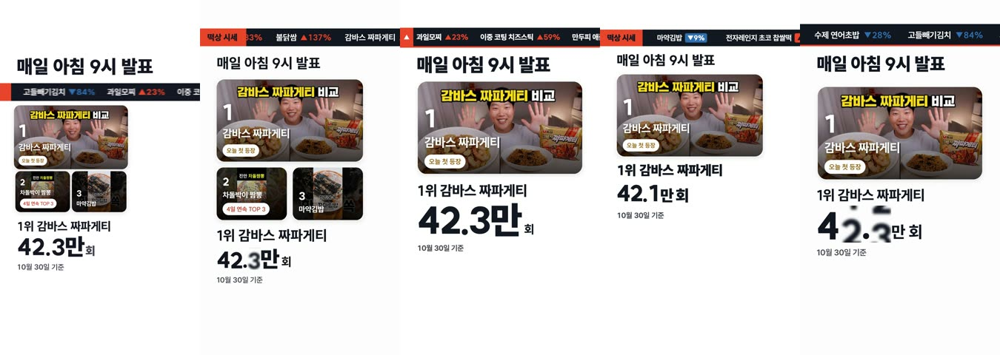

여기까지 온 길
- 첫 기획은 버렸습니다.
처음에는 세로 30초 분량의 "오늘의 음식 시황" 쇼츠를 엔진별로 다섯 편 만들었는데,
다섯 편 모두 같은 순위 화면을 비슷하게 쌓는 데 그쳐서 방향을 처음부터 다시 잡았습니다.
버린 첫 기획: 세로 쇼츠 다섯 편의 12초 화면 (seek · brag 두 판 · Remotion · HyperFrames) - 레퍼런스 영상 2편을 프레임 단위로 분해했습니다.
하나의 앵커가 모든 장면을 잇는 런칭 영상과,
한 획에서 모든 것이 나오는 쇼릴에서 연출 규칙만 가져왔습니다. - brag 하나로 20초 시험작을 먼저 만들었습니다.
유행이 지난 음식을 묘비로 보여 주는 장면에서 묘비와 글자가 어긋나 있어서
"도형 안 글자는 정중앙으로"라는 피드백을 한 번 줬습니다.
같은 세션에서 이어서 7분 만에 수정했고 이 규칙을 시나리오에 반영했습니다. - 메시지를 바로잡았습니다.
주식 차트는 보여 주는 방식일 뿐이고, 영상이 전해야 할 내용은 "요즘 어떤 음식이 뜨는지"입니다.
시험작에 있던 "오를까 내릴까" 같은 사고팔기 문구를 빼고
길이를 40초로 늘리고 음식 사진을 원본 그대로 넣었습니다. - brag 40초판을 "이대로 픽스"로 확정했습니다.
이어서 같은 시나리오로 나머지 세 엔진을 동시에 돌렸고
네 편 모두 만족스러워서 사이트에 쓸 판을 고를 수 있도록 함께 전달했습니다.
비교 영상의 가운데 선을 끌면 왼쪽에는 수정 전, 오른쪽에는 수정 후가 보입니다.
엔진별 장단점
네 편을 같은 시각끼리 나란히 놓고 프레임 단위로 비교했습니다.
엔진마다 장점과 단점을 하나씩 골랐고 칸 순서는 위 영상 배치와 같습니다.
-
seek
장점19초에 시세판 칸 전체가 모션 블러로 쏠리며 1위 사진으로 들어가는 전환이
네 편 가운데 가장 역동적입니다.단점38초에 食 조각이 YZ 로고로 바뀌는 중간 프레임에서
조각이 뭉개져 깨진 것처럼 보입니다. -
brag확정본
장점왼쪽 위 로고, 오른쪽 위 장면 이름, 빨간 레일이 처음부터 끝까지 이어져서
사이트 화면 안에 들어와 있는 듯이 가장 정돈되어 보입니다.단점4~7초 구간에서는 시세 띠가 빠르게 흐르고 블러가 강해서
띠가 멈추기 전까지는 음식 이름과 숫자를 읽기 어렵습니다. -
Remotion
장점칩마다 조회수, "4일 연속 TOP 3", "최근 7일 51.6만 회"까지 넣어서
화면에 담긴 정보가 가장 꼼꼼합니다.단점17초에 문구가 바뀔 때 앞뒤 문구가 가림 없이 겹쳐 지나가서
잠깐 글자가 뭉개집니다. -
HyperFrames
장점시세판 칸 수(25, 35, 46종목)와 상승·하락·신규 수를 세어 올려서
집계되는 과정이 눈에 보입니다.단점레시피 카드의 준비·조리 시간까지 카운터로 세어 올려서,
33초 무렵에는 실제(10분)와 다른 "준비 8분 · 조리 8분"이 잠깐 보입니다.
14초와 25~26초 근처에서 화면이 잠깐 비는 문제는 네 편 모두에 있어서 엔진별 단점에서 뺐습니다.
이 문제는 아래 "해 보니"에 따로 적었습니다.
시나리오에 담은 것
네 에이전트가 받은 시나리오는 한 장입니다.
먼작귀 때는 문구와 규격만 정하고 룩과 모션은 자유롭게 두었지만,
이번에는 장면 순서, 시간, 색, 서체, 장면을 잇는 방식까지 정했습니다.
컨셉은 "食 한 글자가 오늘의 시세가 된다"입니다.
사이트 머리글 "요즘 주食식"의 빨간 食에서 한 획이 떨어져 시세선이 되고,
그 선이 시세 띠, 사진, 시세판, 차트, 레시피를 차례로 만든 뒤 사이트 로고 YZ의 여섯 획으로 다시 모입니다.
| 시간 | 장면 | 화면 문구 |
|---|---|---|
| 0~4초 | 훅 | 요즘, 뭐가 뜰까 |
| 4~8초 | 떡상 시세 (4초 드롭) | 흐르는 시세 띠 |
| 8~14초 | 급등 3연타 | 지금 가장 빨리 뜨는 음식 |
| 14~20초 | 사진 시세판 | 숏폼 레시피 46종목 → 매일 아침 9시 집계 |
| 20~26초 | 오늘의 1위 | 어제 없던 음식이 오늘 1위 |
| 26~32초 | 유행의 한살이 | 뜨는 것도, 지는 것도 |
| 32~36초 | 레시피 | 본 김에, 바로 만들기 |
| 36~37.5초 | 침묵 | 음악을 끄고 食 클로즈업 |
| 37.5~40초 | 로고 | 요즘레시피 |
- 1920x1080, 30fps, 40초. 120 BPM 음악을 그 컴퓨터에서 코드로 합성한다.
- 색은 사이트 색(다크 바탕, 상승 빨강, 하락 파랑)과 사이트 서체만 쓴다.
- 사이트에 걸린 음식 사진 85장은 원본 그대로 쓴다. 자르기와 색 처리는 하지 않고 빨강·파랑은 사진을 담는 틀에만 쓴다.
- 모든 장면은 바로 앞 장면의 모양에서 만들어진다. 컷과 크로스페이드는 쓰지 않는다.
- 도형 안의 글자는 도형 정중앙에 둔다.
- 사고팔기 말투는 쓰지 않고, 사람에게 질문하지 않고 끝까지 진행한다.
모델은 네 에이전트 모두 Opus 5.5(high)이고, 에이전트마다 빈 폴더와 새 설정에서 시작했습니다.
서로 다른 것은 각자 사용한 엔진 하나뿐입니다.
만든 과정
| 엔진 | 끝까지 (자체 검수 포함) | 비용 | 음량 | 만든 때 |
|---|
비용은 API 정가로 환산한 값이고, 네 편 합계는 $32.47입니다.
brag 하나를 먼저 돌려 결과를 확정한 뒤, 나머지 셋을 같은 시나리오로 동시에 돌렸습니다.
해 보니
- 시나리오를 촘촘히 쓰니 네 엔진이 거의 같은 영상을 만들었습니다. 룩과 모션이 자유였던 먼작귀 때는 네 편이 전혀 달랐습니다.
이번에는 같은 사진이 같은 시각에 거의 같은 자리로 나왔고
엔진에 따른 차이는 전환 솜씨와 세부 정보에서만 드러났습니다. - 한 엔진으로 먼저 다듬고 나머지 엔진으로 넓히는 순서가 효과적이었습니다. 시험작에서 받은 "도형 안 글자는 정중앙에" 피드백을 시나리오 규칙으로 옮겼더니,
나중에 만든 세 편은 처음부터 묘비 글자를 가운데에 맞췄습니다. - 화면이 비는 구멍은 네 엔진이 똑같이 냈습니다. 네 편 모두 14초와 25~26초 근처에서 화면이 0.3~0.9초씩 거의 비었습니다.
장면이 끝나면 다음 장면을 작은 점에서 다시 키우는 바람에,
시나리오의 "앞 장면이 다음 장면이 된다"는 규칙이 같은 자리에서 끊겼습니다.
엔진 문제가 아니라 시나리오 규칙이 숫자로 묶여 있지 않았던 탓으로 보고,
다음 시나리오에는 "빈 화면 0.3초 이상 금지"를 숫자로 넣기로 했습니다. - 제작이 오래 걸린 원인은 컴퓨터가 아니라 모델의 사고 시간이었습니다. 한 편에 30~40분이 걸렸지만 CPU가 바빴던 시간은 전체의 1~7%뿐이었습니다.
그래픽카드가 있는 PC로 옮겨도 거의 빨라지지 않으므로,
시간을 줄이려면 effort, 검수 단계, 병렬 실행을 조정해야 합니다.